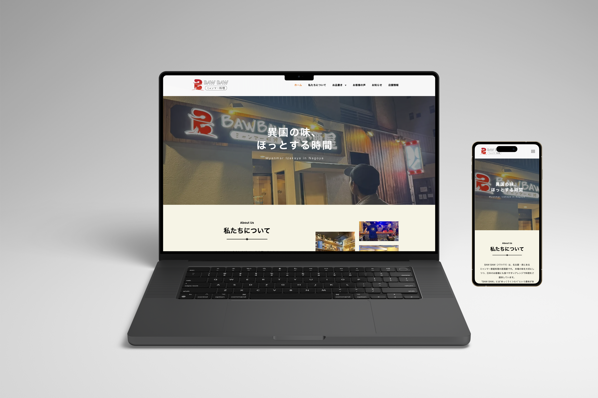

Restaurant Website

使用技術：HTML / CSS / JavaScript
制作期間：2025.09 - 2026.01
概要
レストランの公式サイトをイメージして制作したWebサイトです。 メニューや店舗情報を分かりやすく伝えることを意識しました。
工夫した点
デザインはシンプルで清潔感のあるスタイルを採用し、ユーザーが必要な情報にすぐアクセスできるようにしました。 また、JavaScriptを用いてメニューの切り替えやモーダル表示などのインタラクションを実装しました。
課題と解決
レスポンシブデザインの実装に苦労しましたが、CSSのメディアクエリを活用して、スマートフォンやタブレットでも快適に閲覧できるように調整しました。